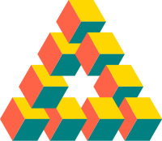
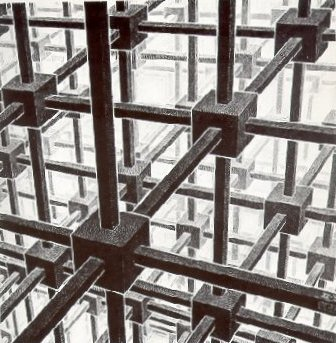

Reutersvärd Triangle
A reimplementation of one of the very first things I every programmed, in SuperLogo around 1995. Implementation in plain Canvas. [Improvent: toggle colors to white with border; Improvement: upgrade would be to have a 3d version]
View DemoKubische Ruimteverdeling
Kubische ruimteverdeling, lithografie (1952) by M.C. Escher. Implementation in Canvas + Three.js.
View DemoMobius/Rune Logo
description